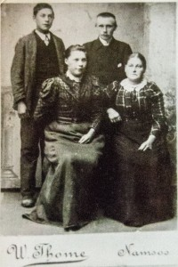
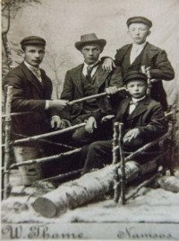
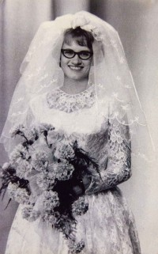

Liv Karine Fjerdingø
K, #93128, f. 8 juli 1943, d. 10 september 2016
Foreldre
Familie: Bjørnar Foss Lien (f. 16 desember 1938)
| Sønn | Lars Børre Lien (f. 14 juni 1973) |
| Datter | Siw Monica Lien+ (f. 16 juli 1975) |
| Sønn | Ole Johan Lien+ (f. 1 desember 1979) |
Biografi
Liv Karine Fjerdingø ble født den 8 juli 1943 på/i Namsos, Nord-Trøndelag. Hun giftet seg med Bjørnar Foss Lien den 3 april 1971. Hun døde den 10 september 2016 på/i Namsos helsehus, Namsos, Nord-Trøndelag. Hun ble gravlagt den 13 oktober 2016 på/i Høknes gravlund, Namsos, Nord-Trøndelag.
Liv Karine Fjerdingø was also known as Liv Karine Lien. Hun bodde på/i Namsos, Nord-Trøndelag. Hun ble bisatt den 20 september 2016 Namsos kirke, Namsos, Nord-Trøndelag.
| Sist redigert |
12 november 2025 09:18:55 |
Helga Solum
K, #93130, f. 27 mars 1888, d. 25 mai 1967
Foreldre
Familie: Martin Nikolai Lien (f. 14 februar 1888, d. 23 desember 1966)
| Sønn | Helge Normann Lien (f. 21 september 1910, d. 22 mai 1990) |
| Sønn | Arvid Johannes Lien (f. 23 juni 1912, d. 24 april 1973) |
| Sønn | Arne Kristoffer Lien (f. 26 november 1913, d. 3 oktober 1975) |
| Datter | Ruth Lien (f. 5 mai 1915, d. 30 april 1918) |
| Datter | Svanhild Lien (f. 12 desember 1917, d. 24 desember 1990) |
| Sønn | Einar Ragnvald Lien+ (f. 19 august 1919, d. 24 mars 1994) |
| Sønn | Kåre Ingvald Lien (f. 12 august 1921, d. 10 juli 1977) |
| Sønn | Nils O. Lien+ (f. 19 november 1922, d. 29 mai 1973) |
| Datter | Olga Johanne Lien (f. 19 november 1922, d. september 2009) |
| Datter | Ragnhild Lien (f. 5 januar 1925, d. 7 mars 2006) |
| Sønn | Harald Lien+ (f. 5 januar 1925, d. 3 juli 1990) |

Kristian Hestvik-Edvard Lien-O
Biografi
Helga Solum ble født den 27 mars 1888 på/i Klinga, Namsos, Nord-Trøndelag. Hun giftet seg med
Martin Nikolai Lien. Hun døde den 25 mai 1967. Hun ble gravlagt den 30 mai 1967 på/i Mosjøen kirkegård, Vefsn, Nordland.
Helga Solum was also known as Helga Lien.
| Sist redigert |
18 september 2021 00:00:00 |
Arvid Johannes Lien
M, #93131, f. 23 juni 1912, d. 24 april 1973
Foreldre
Biografi
Arvid Johannes Lien ble født den 23 juni 1912 på/i Namsos, Nord-Trøndelag. Han giftet seg med
Aslaug Amalie. Han døde den 24 april 1973. Han ble gravlagt den 30 april 1973 på/i Mosjøen kirkegård, Vefsn, Nordland.
Arvid Johannes Lien ble døpt den 21 juli 1912 på/i Namsos, Nord-Trøndelag.
| Sist redigert |
5 mai 2021 00:00:00 |
| Slektskap | 4-menning til Lovise Julie Eggan |
Aslaug Amalie
K, #93132, f. 22 august 1912, d. 21 september 1988
Biografi
Aslaug Amalie ble født den 22 august 1912. Hun giftet seg med
Arvid Johannes Lien. Hun døde den 21 september 1988. Hun ble gravlagt den 29 september 1988 på/i Mosjøen kirkegård, Vefsn, Nordland.
Aslaug Amalie was also known as Aslaug Amalie Lien.
| Sist redigert |
5 mai 2021 00:00:00 |
Arne Kristoffer Lien
M, #93133, f. 26 november 1913, d. 3 oktober 1975
Foreldre
Biografi
Arne Kristoffer Lien ble født den 26 november 1913 på/i Brekkvasselv, Namsskogan, Nord-Trøndelag. Han døde den 3 oktober 1975. Han ble gravlagt den 10 oktober 1975 på/i Mosjøen kirkegård, Vefsn, Nordland.
Arne Kristoffer Lien ble konfirmert den 13 mai 1928 på/i Namsos, Nord-Trøndelag.
| Sist redigert |
12 mai 2021 00:00:00 |
| Slektskap | 4-menning til Lovise Julie Eggan |
Svanhild Lien
K, #93134, f. 12 desember 1917, d. 24 desember 1990
Foreldre
Biografi
Svanhild Lien ble født den 12 desember 1917 på/i Vemundvik, Nord-Trøndelag. Hun giftet seg med
Arne Andreas Drevland. Hun døde den 24 desember 1990. Hun ble gravlagt den 31 desember 1990 på/i Mosjøen kirkegård, Vefsn, Nordland.
Svanhild Lien was also known as Svanhild Drevland.
| Sist redigert |
12 mai 2021 00:00:00 |
| Slektskap | 4-menning til Lovise Julie Eggan |
Einar Ragnvald Lien
M, #93135, f. 19 august 1919, d. 24 mars 1994
Foreldre
Familie: Maria Forsberg (f. 13 februar 1923)
| Sønn | Aimar Lennert Lien (f. 15 juni 1944) |
| Sønn | Johnny Robert Lien (f. 15 juni 1947) |
| Sønn | Tore Eilert Lien (f. 19 desember 1949, d. 3 oktober 2013) |

Adolf Bergum, Kristian Hestvik, Einar Lien. Foran-Martin Lien
Biografi
Einar Ragnvald Lien ble født den 19 august 1919 på/i Namsos, Nord-Trøndelag. Han giftet seg med
Maria Forsberg. Han døde den 24 mars 1994 på/i Bodø, Nordland. Han ble gravlagt den 29 mars 1994 på/i Bodin kirkegård, Bodø, Nordland.
Einar Ragnvald Lien kjøpte i 1948 Raubergvika 3/31, Hammersøen, Vemundvik, Nord-Trøndelag.
| Sist redigert |
11 november 2025 00:28:54 |
| Slektskap | 4-menning til Lovise Julie Eggan |
Arne Andreas Drevland
M, #93136, f. 1 februar 1910, d. 29 januar 1997
Biografi
Arne Andreas Drevland ble født den 1 februar 1910. Han giftet seg med
Svanhild Lien. Han døde den 29 januar 1997.
| Sist redigert |
6 mai 2021 00:00:00 |
Maria Forsberg
K, #93137, f. 13 februar 1923
Familie: Einar Ragnvald Lien (f. 19 august 1919, d. 24 mars 1994)
| Sønn | Aimar Lennert Lien (f. 15 juni 1944) |
| Sønn | Johnny Robert Lien (f. 15 juni 1947) |
| Sønn | Tore Eilert Lien (f. 19 desember 1949, d. 3 oktober 2013) |
Biografi
Maria Forsberg ble født den 13 februar 1923 på/i Sverige. Hun giftet seg med
Einar Ragnvald Lien.
Maria Forsberg was also known as Maria Lien. Hun was also known as "Svea" Forsberg.
| Sist redigert |
26 mai 2021 00:00:00 |
Nils O. Lien
M, #93138, f. 19 november 1922, d. 29 mai 1973
Foreldre
Familie: Strømdal (f. før 1941)
Biografi
Nils O. Lien ble født den 19 november 1922. Han giftet seg med Kari Nerli. Han giftet seg med Strømdal. Han døde den 29 mai 1973 på/i Bodø, Nordland. Han ble gravlagt på/i Bodin kirkegård, Bodø, Nordland.
| Sist redigert |
6 mai 2021 00:00:00 |
| Slektskap | 4-menning til Lovise Julie Eggan |
Tom Morten Lien
M, #93139, f. 28 april 1961, d. 14 mai 1998
Foreldre
| Far | Nils O. Lien (f. 19 november 1922, d. 29 mai 1973) |
| Mor | Strømdal (f. før 1941) |
Biografi
Tom Morten Lien ble født den 28 april 1961. Han døde den 14 mai 1998 på/i Bodø, Nordland. Han ble gravlagt den 22 mai 1998 på/i Bodin kirkegård, Bodø, Nordland.
| Sist redigert |
6 mai 2021 00:00:00 |
| Slektskap | 4-menning 1 gang forskjøvet til Lovise Julie Eggan |
Olga Johanne Lien
K, #93142, f. 19 november 1922, d. september 2009
Foreldre
Biografi
Olga Johanne Lien ble født den 19 november 1922 på/i Vemundvik, Nord-Trøndelag. Hun giftet seg med
Olav Granmo. Hun døde i september 2009 på/i Hattfjelldal, Nordland. Hun ble gravlagt på/i Hattfjelldal kirkegård, Hattfjelldal, Nordland.
Olga Johanne Lien was also known as Olga Johanne Granmo.
| Sist redigert |
6 mai 2021 00:00:00 |
| Slektskap | 4-menning til Lovise Julie Eggan |
Olav Granmo
M, #93143, f. 29 februar 1920, d. 3 januar 1994
Biografi
Olav Granmo ble født den 29 februar 1920. Han giftet seg med
Olga Johanne Lien. Han døde den 3 januar 1994. Han ble gravlagt den 11 januar 1994 på/i Hattfjelldal kirkegård, Hattfjelldal, Nordland.
| Sist redigert |
6 mai 2021 00:00:00 |
Helge Normann Lien
M, #93144, f. 21 september 1910, d. 22 mai 1990
Foreldre
Biografi
Helge Normann Lien ble født den 21 september 1910 på/i Røbergvik 6/6, Lødding, Vemundvik, Nord-Trøndelag. Han giftet seg med
Anna K. Olsen. Han døde den 22 mai 1990 på/i Grong, Nord-Trøndelag. Han ble gravlagt den 28 mai 1990 på/i Grong kirkegård, Grong, Nord-Trøndelag.
| Sist redigert |
12 mai 2021 00:00:00 |
| Slektskap | 4-menning til Lovise Julie Eggan |
Anna K. Olsen
K, #93145, f. 1 desember 1905, d. 19 mai 1991
Biografi
Anna K. Olsen ble født den 1 desember 1905. Hun giftet seg med
Helge Normann Lien. Hun døde den 19 mai 1991 på/i Grong, Nord-Trøndelag. Hun ble gravlagt den 24 mai 1991 på/i Grong kirkegård, Grong, Nord-Trøndelag.
Anna K. Olsen was also known as Anna K. Lien.
| Sist redigert |
6 mai 2021 00:00:00 |
Einar Kongsmo
M, #93146, f. 24 desember 1928, d. 25 januar 1994
Foreldre
Familie: Reidun Lien (f. 23 august 1930, d. 9 september 2012)
| Datter | Kari Margrethe Kongsmo+ (f. 5 november 1947, d. 10 april 1971) |
| Sønn | Reidar Eilif Kongsmo+ (f. 17 juli 1949) |
| Datter | Anne Grethe Kongsmo+ (f. 25 desember 1963) |
Biografi
Einar Kongsmo ble født den 24 desember 1928 på/i Fosnes, Nord-Trøndelag. Han giftet seg med
Reidun Lien den 11 oktober 1947. Han døde den 25 januar 1994 på/i Namsos, Trøndelag. Han ble gravlagt den 1 februar 1994 på/i Vemundvik kirkegård, Namsos, Trøndelag.
| Sist redigert |
9 mai 2021 00:00:00 |
Kristian Nilssen Kongsmo
M, #93147, f. 15 november 1872, d. 30 april 1957
Foreldre
Biografi
Kristian Nilssen Kongsmo ble født den 15 november 1872 på/i Øyra, Kongsmoen, Høylandet, Nord-Trøndelag. Han giftet seg med
Olga Johansdatter Moe. Han døde den 30 april 1957.
| Sist redigert |
6 mai 2021 00:00:00 |
Olga Johansdatter Moe
K, #93148, f. 10 mars 1885, d. 2 august 1955
Biografi
Olga Johansdatter Moe ble født den 10 mars 1885. Hun giftet seg med
Kristian Nilssen Kongsmo. Hun døde den 2 august 1955.
Olga Johansdatter Moe was also known as Olga Kongsmo.
| Sist redigert |
6 mai 2021 00:00:00 |
Kari Margrethe Kongsmo
K, #93149, f. 5 november 1947, d. 10 april 1971
Foreldre
Familie: Steinar Helge Grydeland (f. 3 januar 1944)
| Sønn | Knut Aage Grydeland+ (f. 22 mars 1966) |
| Sønn | Geir Erik Grydeland (f. 10 april 1968, d. 5 april 1971) |

Kari Margrethe Kongsmo Grydeland
Biografi
Kari Margrethe Kongsmo ble født den 5 november 1947. Hun giftet seg med Steinar Helge Grydeland den 23 oktober 1965.

Hun døde da huset til familien brant den 10 april 1971 på/i Namsos, Nord-Trøndelag.
Kari Margrethe Kongsmo was also known as Kari Margrethe Grydeland.
| Sist redigert |
14 august 2024 21:05:19 |
| Slektskap | 4-menning 1 gang forskjøvet til Lovise Julie Eggan |
{kind=link}
{kind=link}
{kind=link}